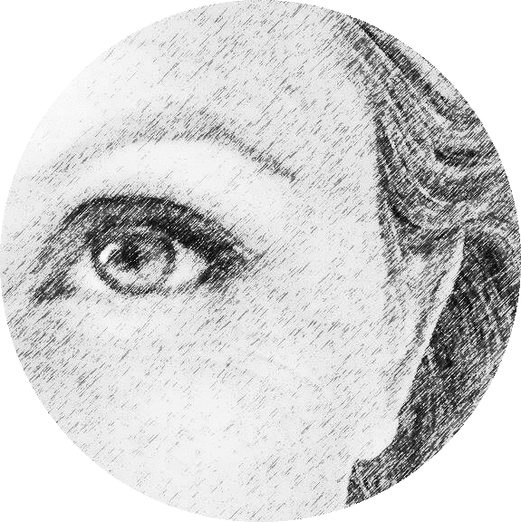
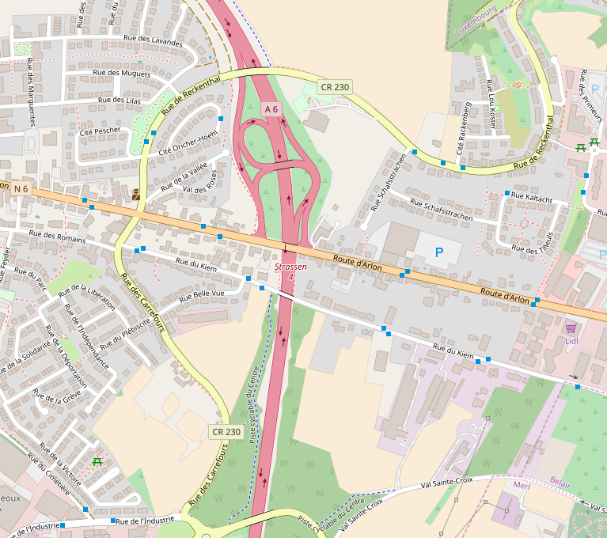

Coaching Solutions
"...Put on the same line of sight the head, the eye and the heart.”
H. Cartier-BressonAbout
Emotica is a solid reference in Luxembourg’s coaching sector and a leading partner for a social change.
It is a change agent, which works with people but also entities, such as private companies, NGOs and institutions in order to promote social inclusion.
It is a space for personal development, a welcoming and trustfull enviroment to address your objectives or daily challenges. A non judging partner helping you reach your goals.

Hi, my name is Gloria Sanchez and I live in Luxembourg since 1998. I worked two decades in finance, as a Senior Manager, in the major international financial companies. Before that, I studied a Master Degree in Political Science and Sociology.
Always devoted to human development, I changed career path and now I am a Certified Coach.
I speak English, French, Italian and Spanish. I am the “soul” of Emotica and its owner.
Coaching
BELONGING
THE SOCIAL DIMENSION OF COACHING
A need of belonging and attachment is universal. It does not matter if we are women or men, healthy or not, part of a minority or a majority, rich or poor, young or old. Everyone needs a space where we feel respected, included, and supported. Belonging to a family, work team, to our city, rooting for a sport team, are ways of being connected. It is Emotica’s mission to increase this sense of connection for those who find this basic need unmet. This is why we promote inclusion, because as long as the inter population relationships increase, the sense of being socially connected delivers the best to us and to our surroundings.“Our premise is that inclusion leads to gowth. So for those who are locked out, they lose development, and those are in power lose market and growth”
Jesse Jackson
EMPOWER YOURSELF
Are you a fish?Since we were born we have shaped our lives to a pre-defined model. We adjust to our parents, to our friends, to our partner, to our job description. Sometimes we feel like the fish that was asked to climb a tree, we find ourselves inadequate, frustrated, angered or overwhelmed. Never good enough? But the question is, are you really a fish?
Knowing what we are, or want, or need, or feel, despite other opinions, gives us the power and the control on our lives and ourselves. It is the road to feel valuable for what we do, appreciated for what we shared, loved for what we already are.
PICTURE YOUR OBJECTIVE
Emotica is a Life Coach company, but not a common one. We use Photography, automatic writing, music and other ways to look into ourselves, to express unspeakable feelings, to communicate with others.Have you ever questioned why it is so easy to take a selfie and so uncomfortable to pose for a picture?
Why can a song provoke a myriad of emotions, trigger feelings, dreams, fears or unspeakable needs?
Let's explore the journey together in a more resourceable and creative way.
It is about yourself. Your way.
Contact
Emotica is located in Strassen, very close to the city center.
Tel: +352 671 Emotica
Mail: hola@emotica.lu
Book a session via phone or email.
